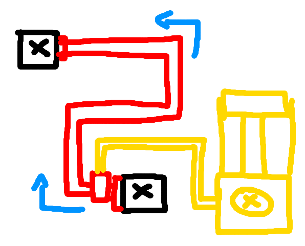

Flopcat's Flog
More boring history lessons. This is becoming a pattern.
The year is 2015. NTM has recently gotten a nuclear reactor (uranium burning engine, more like it) and an electric furnace. Electricity is finally a concept that exists, so how do we get that electricity from the reactor to the furnace?The answer: Cable blocks. Obviously. But how do they work? The most basic way of moving energy is just by making blocks ask their neighbors if they would like to receive energy, and then send it over. Cables serve as little more than small energy buffers that propagate energy to neighbors. Energy grids were small, and cables usually not very long, so this approach...worked. Horribly, but work it did.
Soon enough I realized that I had made a mistake, the power value for cable blocks was a static value, meaning all cables shared the same buffer value, meaning cables effectively acted as wireless energy spreaders. Great.
Holy shit this sucks ass
After fixing that blunder, cables got more accurate, but at the same time had way less throughput, and power would "move" through cables at one block per tick, meaning sending had a noticeable, albeit not terrible, delay. Which prompted the next, even more horrifying creation:The flood fill controlled energy transmission algorithm
Back in the day I considered it a marvel, as it was the largest piece of code I've written thus far that worked on the first try. In retrospect it was about the most vile, horrid way of solving the problem, but it worked for years with only minor lag issues and occasional crashes (heavy sarcasm).The heart of the flood fill system was one large recursive function that would iterate over neighboring cable blocks. For a flood fill to work, it has to know where it has been before, and while there are many elegant ways of doing that, I just chose the worst one: Cables had a cache where they would flip a boolean on or off depending on what "phase" of the flood fill it was in. Hence why transmission happened with two tacts: Every half a second, the sending machine would call the recursive function, and set all cables it detects to "on" or "off", alternating between these two. Only when the cables reverted back to "off" would the system also actually transfer power to receivers it detected nearby, which meant power was only transferred once per second. Really, the "on" and "off" tact-based system is kind of like the bucket tool in paint, to track its progress, it would replace a white canvas with black pixels, later it would go back and color the black canvas white again. Progress for the flood fill was also rather slow, for performance reasons, if a cable was not part of the previous flood fill operation, it was added to a cache, but the flood fill would stop, meaning for the first time the machine was loaded, it had a delay until it would start transmitting energy
The logical consequence of doing this many block checks using recursive functions are rather obvious: Adding more energy producing machines would lag the entire thing more, the block checks had a tendency to load chunks (which sounds cool until you realize it means loading a large number of chunks only for them to unload again immediately, over and over and over again), and that because of the recursive nature of the function, transmission distances were limited (if the stack exceeds a depth of ~1000, the game just crashes).
At this point I would like to issue a formal apology to you, for making you read this shit.
Enter the network
Surely there's an easier way of establishing a connection between machines other than using the most braindead and inefficient flood fill, right? The answer was relatively simple: A proper network. In this context, a network is an abstract object that "spans" over multiple cables which are connected, which then acts as the intermediate for all energy transfer related matters, instead of having to deal with 50,000 cables individually.The concept is simple: A cable keeps track of a network. If the cable is not part of a network, it will either check its neighbors for cables that have networks, or make a new one. If two cables touch but have different networks, the networks are joined together into one larger one. If a cable is destroyed, so is the entire network, but new networks will be created in its place immediately after.
This is great for performance, since cables only really need to do one check when they are placed, and one when they are destroyed. Power producers can simply go up to the network and say, "here, energy", and the network will distribute it to any receivers that have subscribed to that network.
An unintended side effect was that cable tile entities that unload did not actually get removed from the network, their "corpse" was still part of the net, and the network itself was unaffected. This means that, as long as endpoints remained loaded, power could flow, even if chunks between endpoints were unloaded. While this meant that entire tile entity instances which were considered "dead" still lingered in memory, they were rather lightweight, and the bug was canonized as a feature.
One issue however was the network destruction process, breaking a cable destroys its entire network, as it expects the network to correctly rebuild after. However, with many cables not being loaded, the network would be shattered. To solve this, the "re-eval" system was born, one of the most corrosive pieces of code I have ever written. Tile entities were thrown into a hash map, with the position being used for the hash value, and once a network was destroyed, an artificial "re-eval" rebuild process was started, where instead of naturally connecting, cables would find their previous neighbor based on hash, effectively bypassing the world and the concept of loaded chunks entirely. This system worked, for the most part, but was incredibly hacky.
Soon enough the cracks in the power net started to show, CPU time per update increased with the rate of providers times subscribers, and since most people only had one power grid with many machines in them, each new machine added would increase the CPU load exponentially until larger bases started tanking TPS.
Nodespace: The imaginary cable dimension
The fix for the performance issue was reworking the way transfers happened. Instead of having every consumer tick, send their power to the network and then have the network iterate over each and every connected consumer, every time, the network itself would take care of both getting the power from all providers and distributing it to the subscribers.However, there was another issue I intended to fix: Re-eval. The system worked, but had some issues, and overall was quite cancerous to work with. After some tinkering, I found a concept that would do the job rather nicely: Nodespace.
Nodepsace is basically an "imaginary" dimension that keeps track of "power nodes", basically representations of the cables. Whether a chunk is loaded or not is entirely irrelevant, if a cable is placed, it creates a node at that position, if it is removed, the node is also destroyed. If the cable unloads, the node remains, if the cable loads back in again, instead of having a zombie tile entity and a real tile entity as part of the network, the cable simply checks if there already exists a node in that space. Zombie tile entities used to be known as "energy voids", since zombie subscribers would suck up energy without ever becoming full, without ever actually filling the real tile entity, since it no longer exists.
Having nodes completely separate like that also meant the actual power nets weren't so deeply intertwined with the cables themselves, meaning the code was easier to work with which was an excellent condition for the new transfer code.
The new transfer code is relatively simple: It iterates over each provider and consumer once to figure out how much energy needs to be transfered, then makes even cuts for both sides, and finally iterates over each part again to add/remove energy. The time requirement became (P+S)*2 instead of P*S, which especially in huge bases makes an enormous difference.
UNINOS: Nodespace for you and me
Fluids of course also use a system similar to power, the concept is basically the same. What's a fluid duct, if not just a cable that moves fluid? After power networks became a thing, fluids soon also became networked, however once power got nodespace, development on the side of fluids stopped, they do not use a nodespace equivalent. It was always sort of planned that fluids would make use of nodespace sooner or later, perhaps a specialized "fluid nodespace", but historically transfer systems have always been something that's a huge undertaking, gets postponed a lot and just generally sucks to do, so that never went anywhere. A few concepts got thrown around for a more universal system that would handle both power and fluid nodes, but not a whole lot of time went into fleshing those ideas out.Which brings us to a point in time just about two months ago: NTM's item transport is somewhat basic, and has some limitations due to the way conveyors work, so the idea came up of pneumatic item tubes, not too dissimilar from the ones BuildCraft of Thermal Dynamics have, but just like power grids, the transfer would be instant. A system not to replace conveyors, but to compliment them. The more thought went into pneumatic tubes, the more apparent it became that they would work almost exactly like power grids, giving the possibility of long range transport, potentially even though unloaded chunks. Chunkloading drones were supposed to fill that role, but they are ultimately rather slow, and their chunk loading ability has been bugged for quite a while, so giving a better alternative feels appropriate.  (The first concept art of pneumatic tubes, which are simply powered by compressed air, demanding separate infrastructure which feels like a fair trade-off to conveyors that just work on their own)
All these requirements effectively mean that, like power and fluids, item transfer too needs its own version of nodespace. That was the tipping point where I decided that instead of giving fluids their own nodespace equivalent, there has to be a universal system that can handle any sort of network with no changes to the underlying system and only minimal additions to handle how transfers work.
Wearing Nodespace's skin
Which brings us to today. UNINOS, the universal nodespace, is basically complete. It's largely based on the old nodespace code, with various adjustments and additions to handle different node types, as well as a system that can dynamically create networks of different types. To test the new system, I "ported" the power system to use UNINOS instead of the "old" nodespace, and the systems were so damn similar that it worked right out of the box (with just one minor bug caused by a copy-paste error). Old nodespace's class still exists for compatibility reasons, simply redirecting to UNINOS, with things like the old power nodes also just extending the generic universal node type, supplying the power type. This basically means that the switch to UNINOS created no changes to the API, and didn't require any changes whatsoever to anything that actually used the power network directly, like machines and cable tiles.Of course, since fluids never used nodespace to begin with, porting the machines will be a similarly painful and long process compared to porting power machines from old power nets to nodespace, but it will be well worth it, since fluids can finally benefit from a nodespaced system, and any new network we can think of can too. Networks can be used by all sorts of things, and the difficulty in making them was the driving factor behind making the TELEX machine use Redstone-over-Radio, a wired connection would have been cool but sadly making them wireless was just much quicker and easier.
What the future holds
With networks being an easy addition, we can do all sorts of things. Nodespaced fluids obviously comes first, because it fixes the last remaining performance issues coming from fluid transfers. Right after that we're doing pneumatic tubes, because belt logistics are nice and good but lacking in some areas, and pneumatic pipes will cover those areas more effectively. After that? Who knows, since INDEX is right around the corner, I have been contemplating an RoW system - Redstone-over-Wire, a localized RoR type system that would be interoperable, but instead of using frequencies and torches it would be simple connectors and wires. Not necessarily a must-have, but it would be rather convenient to set up (basic comparator actions require no messing with a GUI whatsoever!) and look way cooler.Another avenue that might be worth pursuing would be NTL, NTM's cancelled logistics update which brought us conveyor belts, but the actual meat and bones of the system were never realized - a centralized mass storage system with various functions for extracting and routing items. Don't want to overpromise, and this might never become a thing, but I do like to entertain the idea that the old logistics system idea is now feasible again.
< i've seen enough